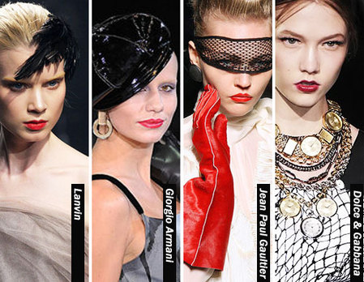
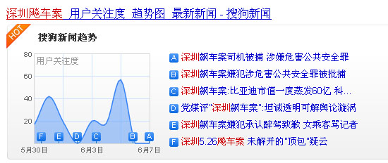

传播正能量资讯
首页
社会热点
文娱影视
财经体育
文旅生活
热点排行
互动专区
焦点
焦点报道
社会热点
记录真实事件，关注城市现场，看见公共议题背后的社会温度。
8
热点追踪
24h
实时更新
100%
真实报道
深度追踪
头条
重庆副市长、公安局长邓恢林被查
前天还公开露面，飞广州航班17人确诊。事件引发社会广泛关注，相关部门已介入调查。
2020-06-14
最新快讯
01
民航局发出第一份"熔断指令"
14:30
02
满满的正能量！晚高峰7辆车抛锚，市民冒雨抬车
12:15
03
亲历者讲述温岭爆炸：罐车被炸飞砸中居民楼
10:00
新闻列表
暖心
满满的正能量！晚高峰路口7辆车抛锚，过路市民冒雨抬车
社会
重庆副市长、公安局长邓恢林被查，前天还公开露面
社会
浙江温岭槽罐车爆炸致19人遇难，涉事公司曾被11次处罚
疫情
北京丰台花乡地区升级为疫情高风险地区，全国唯一
国际
外媒资深记者眼中的弗洛伊德事件，美示威浪潮史无前例
社会
北京通报36个新增病例情况：对发热就诊人员全员检测
疫情
民航局发出第一份"熔断指令"，22日起暂停南航CZ392
财经
最新房价涨幅榜出炉：东莞这个片区超广州杭州
图片报道


←
返回首页
文娱影视 →
↑